火影忍者-社交系统拆解
拆解目的：通过拆解《火影忍者》社交模块的核心功能，提炼其驱动玩家互动和留存的设计逻辑，并探讨这些逻辑如何适用于其他类型游戏的社交系统设计，形成可迁移的社交机制设计思路
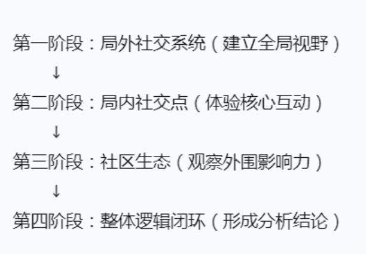
竞品：航海王
认知：熟人社交为主的轻社交强竞技格斗游戏，依托腾讯的微信/QQ平台进行社交互动
一、局外社交系统分析
定义：游戏主界面等非对战环境下，用于玩家间关系建立、维系和互动的所有功能模块的总称
1. 组织系统（核心）
游戏内最高形态的集体社交平台，通过共同目标、资源绑定和层级管理构建强关系链
要求：通关副本2-10后开启
1.1 系统架构
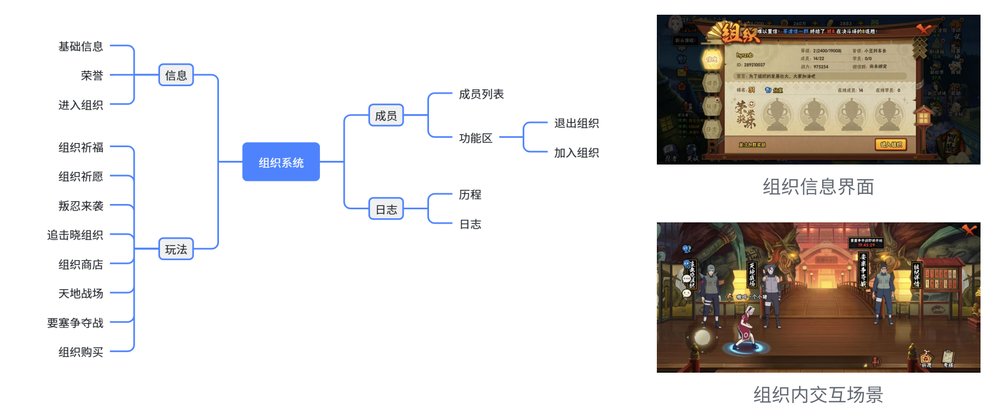

组织信息界面

组织内交互场景
1.2 系统分析
核心问题
在《火影忍者》手游中，单人玩法（如决斗场、冒险副本）满足了玩家的竞技和收集需求，但缺乏能够沉淀长期情感连接的集体空间。随着游戏进程推进，玩家容易因玩法疲劳而流失，其根本原因在于：
• 玩家之间多为临时组队或短暂交手，难以形成稳定的社交关系
• 火影IP最核心的情感主题――“羁绊”，在游戏内缺少具象化的承载系统
• 中重度玩家在个人成长触顶后，需要新的目标驱动，而集体荣誉和互助成长是天然的延申
不同于好友系统主要解决“现实关系导入与轻量互动”，组织系统的核心任务是：在游戏内构建一个有温度、有目标、有归属的集体，将个人成长与集体贡献深度绑定，从而提升用户长期留存和情感黏性。
基于这一核心问题，组织系统需要满足以下需求：
• 归属感：让玩家感受到自己是集体的一员，组织有身份、有历史、有文化
• 互助性：成员之间能够低成本地相互帮助，形成正向互惠循环
• 利益绑定：将核心成长资源与组织贡献挂钩，使玩家离不开组织
• 集体荣誉：通过周期性集体活动创造共同目标，强化“我们”的意识
• 管理工具：为组织管理者提供清晰高效的运营手段，维持组织健康度
1.3 设计目的
1. 搭建集体归属空间，承载“羁绊”主题和解决归属感问题，提升长期留存和用户粘性；
2. 建立互惠互助生态，强化成员间的连接，促进日活和互动频次；
3. 将资源获取和贡献度绑定，推动长线留存和付费转化；
4. 提供高效的管理工具，降低管理负担；
1.4 设计思路
1.4.1 通过信息展示和记录，搭建集体归属空间
• 组织信息：
￮ 设计特征：
展示组织名称、首领、人数、战力、排名、奖杯、在线人数等核心信息；首领/高层可修改对内公告、对外宣言，并实时发布招募信息。
￮ 行为预期与价值：
玩家可以快速感知组织整体的实力和活跃度，强化组织认同感。
• 成员列表：
￮ 设计特征：
详细列出每位成员的累计功勋、上次登录时间、加入时间；首领和高层可据此进行管理（如清理僵尸、提拔精英），首领界面还包含“解散组织”操作。
￮ 行为预期与价值：
列表透明化帮助玩家了解组织的活跃构成，激励成员持续参与。首领通过数据管理维持组织活力，避免组织因僵尸成员而衰败。
• 组织日志：
￮ 设计特征：
自动记录组织大事记：成员加入/退出、职位升降、组织升级、玩法获奖等时间节点。
￮ 行为预期与价值：
日志赋予组织“历史感”，老成员可以看到自己与组织共同成长的轨迹，新成员也能快速了解组织的过往荣誉，增强情感依附。这种日志记录让集体变得有血有肉。
1.4.2 完成日常任务，建立互惠互助生态
• 祈愿系统
￮ 设计特征：
每周刷新祈愿绘马，成员可消耗绘马许愿（需目标忍者碎片超过半数）；其他成员可捐赠碎片帮助完成愿望；每周捐赠达2/4/6片可获得宝箱奖励；系统保留获赠记录。
￮ 行为预期和价值：
玩家之间通过赠与行为快速构建人情网络；宝箱提供正向反馈鼓励互赠行为；获赠记录让玩家之间的善意被记录和看见，推动陌生关系逐渐转向深度社交。
• 师生修炼：
￮ 设计特征：
组织内的新手玩家可寻求老玩家帮助，通过师生修炼加速成长，老师也能获得收益。
￮ 行为预期与价值：
鼓励高战玩家主动帮助新人，既解决了新手的成长焦虑，又让老玩家获得“被需要”的成就感，提供了一条新的互助纽带，促进组织内部的代际传承。
1.4.3 将资源获取和贡献度绑定，利用利益驱动合作
• 祈福系统
￮ 设计特征：
每日可进行祈福（相当于组织签到），累计签到人数达成阶段目标后，全员解锁奖励，包含金币红包等。
￮ 行为预期和价值：
将个人行为与集体收益挂钩，让每日上线从个人习惯升级为集体责任，逐步形成稳定的组织日常活跃。
• 组织商店
￮ 设计特征：
消耗组织功勋可兑换忍者碎片（S/A/B级）、勾玉、忍玉等核心资源；部分高价值碎片（如S忍）需要徽章兑换，徽章仅通过要塞战产出。
￮ 行为预期与价值：
组织商店是核心利益绑定的关键。玩家为了快速成长，必须参与组织活动获取功勋；为了S忍碎片，必须参与要塞战。功勋系统将贡献量化、积累、消费，让利益驱动与情感连接并行，让群体之间的联结更加紧密。
1.4.4 提供高效管理工具，降低管理成本维持运营
• 设计特征：
透明化成员信息；权限分明的职位体系；可设定最低战力门槛，可选无审批或人工审批；日志自动记录成员变动，便于追溯；要塞战和追击晓组织产出的道具进入组织拍卖，首领可分配部分奖励。
• 行为预期与价值：
职位体系让精英成员获得“被认可”的荣誉感；登录时间可见使普通成员产生“被关注”的自觉性；首领定期优化组织构成，维持组织健康；精英成员主动分担管理，降低首领压力；成员因活跃被看见而持续投入；促进组织健康成长延长生命周期。
1.5 小结
针对情感归属：你是谁-身份；你做过什么-历史；和谁一起-成员。这些要素共同构成了集体人格的基石。
整体来看，《火影忍者手游》的组织系统围绕“羁绊”主题构建了一套完整的集体社交生态。其核心设计逻辑可以概括为四个层次：
• 身份塑造：通过信息页、成员列表、组织日志赋予组织独特的“人格”和历史，让玩家产生归属感
• 互惠循环：祈愿、祈福、师生等机制形成“我帮你、你帮我”的日常互动，逐步深化成员间的情感连接
• 利益绑定：组织商店和功勋系统将个人成长与集体贡献深度耦合，使玩家因利益留下，并在长期共处中转化为情感依附
• 管理支撑：为组织管理者提供清晰高效的工具，确保集体能够持续健康运转
这一设计既承接了火影IP的情感内核，又通过精妙的机制设计，将松散的玩家群体凝聚为有温度、有战斗力的集体，从而显著提升用户的长期留存与付费意愿。
2. 好友系统
2.1 系统架构
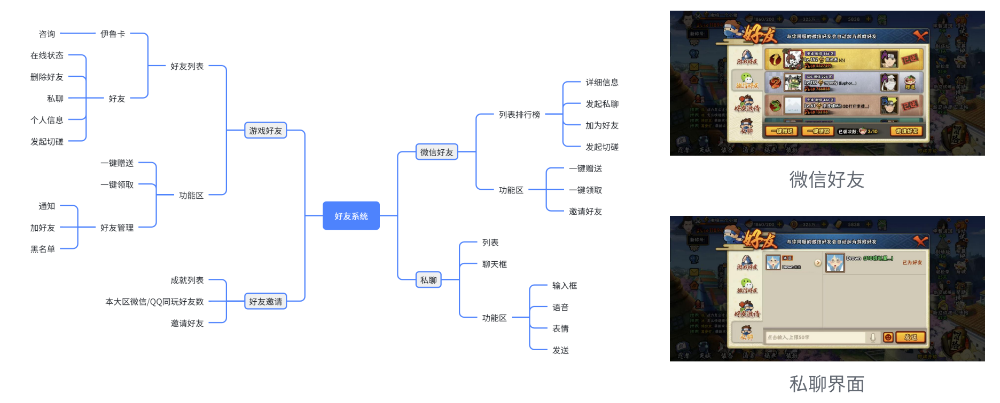

微信好友

私聊界面
2.2 系统分析
核心问题：
游戏内的大多数社交关系属于临时关系（如决斗场对手、随机组队队友），缺乏将弱关系沉淀为稳定关系的机制
因此玩家的上线动力主要依赖玩法本身，一旦玩法疲劳，缺乏社交关系维系，长期留存压力较大
不同于需要从零培育陌生人社交的游戏，火影拥有微信/QQ现实关系链的独特优势，因此系统的核心问题不再是“如何培养陌生人社交”，而是：
如何将现成的现实强关系高效导入游戏，并转化为持续的游戏动力，而非在游戏内重新培育一套虚拟社交体系
基于这一问题，系统需要满足以下需求：
• 轻量化：社交行为成本低，不增加玩家负担
• 易用性：社交入口清晰，玩家能够快速完成互动
• 激励性：社交行为能够对核心竞技玩法形成正向反馈
2.3 设计目的：
1. 导入现实社交关系，通过熟人竞争提驱动日活和付费转化
2. 构建低成本高频次的轻量化日常互动，避免社交负担
3. 降低新手期求助门槛，保障社交环境质量
2.4 设计思路：
2.4.1 通过导入现实社交关系，用熟人竞争提升活跃和留存
￮ 微信/QQ好友：
▪ 设计特征
同服的微信/QQ好友自动添加为游戏好友，列表默认按等级和战力排序，点击好友头像可查看资料、私聊、加好友、发起切磋
▪ 行为预期和价值
排名直接触发熟人攀比心理――“不能输给现实朋友”，驱动玩家主动提升战力、甚至付费追赶
私聊与切磋等互动入口可以将竞争情绪快速转化为社交行为，使现实关系自然延伸到游戏互动中，提升用户粘性与付费转化率
￮ 好友邀请：
▪ 设计特征
邀请好友界面包含阶段性成就奖励列表、邀请按钮，并展示“本大区微信/QQ同玩好友数”
▪ 行为预期和价值
“同玩好友数”制造从众心理――“这么多朋友都在玩”，激发归属感与邀请意愿
成就奖励持续激励多轮邀请，实现低成本裂变拉新，同时新用户因熟人背书留存预期更高
2.4.2 构建低成本高频次的轻量化日常互动，避免社交负担
￮ 一键赠送/领取体力：
▪ 设计特征
好友列表底部设置“一键赠送/领取”按钮，每日刷新，同时作用于游戏好友与微信/QQ好友
▪ 行为预期和价值
玩家上线后习惯性完成一键操作，获得“被需要”的即时满足感，形成稳定的每日登录习惯
这种互惠行为加深关系链，直接拉升DAU及次日/七留，实现轻量化社交
￮ 好友切磋：
▪ 设计特征
好友详情页可以发起“发起切磋”入口，向在线的好友发送1V1对战邀请
▪ 行为预期
玩家在等待匹配或闲暇时主动邀请好友切磋，既娱乐又提升技术，有效延长单次在线时长
为决斗场等核心竞技玩法铺垫社交基础，强化好友间的竞技乐趣，且属于自主选择，不构成强制社交任务
2.4.3 降低求助门槛，保障社交环境质量
￮ 伊鲁卡：
▪ 设计特征
游戏好友列表置顶显示“伊鲁卡”拟人化客服助手，点击进入FAQ咨询界面
▪ 行为预期和价值
玩家遇到困惑时，更愿意点击“好友”形象而非传统客服入口寻求帮助，降低因问题无法解决而流失的概率
利用火影IP角色承担客服功能，强化IP亲和力减少客服压力，提升新手留存与满意度
￮ 私聊功能：
▪ 设计特征
私聊界面支持文字、语音、表情包发送，保留历史聊天记录；好友详情页可查看对方详细资料（战力、忍者池、段位等）
▪ 行为预期与价值
私密沟通让好友间可以深度交流战术、约定组队，增强社交绑定
资料透明化激发请教或协作动机，进一步提升关系深度与留存
￮ 好友管理:
▪ 设计特征
好友管理中包含通知、黑名单与加好友功能
▪ 行为预期与价值
玩家可主动屏蔽骚扰用户，并对感兴趣的好友主动添加，保障核心玩家的社交环境质量，减少负面体验导致的流失
2.5 小结
整体来看，《火影忍者手游》的好友系统并未依赖复杂的社交养成机制，而是围绕现实关系导入与轻量互动展开
其核心设计逻辑可以概括为三个层次：
• 现实关系导入：利用微信/QQ关系链快速建立好友网络
• 轻量互动循环：通过赠送体力、切磋等行为维持高频互动
• 社交环境维护：通过好友管理与客服入口保障社交体验
这种设计既降低了社交成本，也强化了玩家之间的竞争与协作关系，从而提升玩家活跃度与长期留存
3. 聊天系统
3.1 系统架构
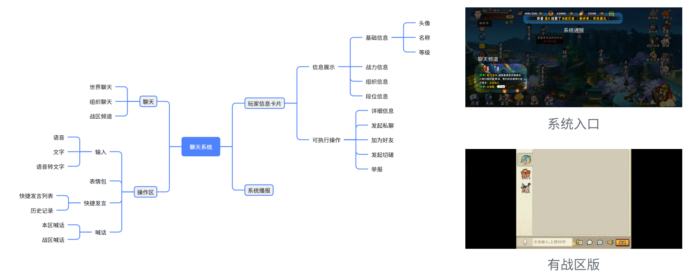

系统入口

有战区版
3.2 系统分析
核心问题
在缺乏统一信息枢纽的游戏中，玩家处于“信息孤岛”状态：公共表达无出口、集体沟通无阵地、关键信息无触达。具体表现为：
• 公共表达需求未被满足：玩家获得稀有忍者、打出精彩操作时，缺乏“被看见”的舞台
• 集体沟通效率低下：组织成员约战、协调活动只能依赖外部QQ群，游戏内缺乏即时同步工具
• 关键信息触达困难：版本更新、活动开启、高手战报等无法有效传递给目标玩家
不同于好友系统解决“一对一私人关系”、组织系统解决“集体归属”，聊天系统的核心任务是：构建游戏内的信息高速公路，承载公共表达、集体协同与系统通知三大信息流，让信息在正确的时间触达正确的人。
基于这一核心问题，聊天系统需要满足以下需求：
• 公共性：为所有玩家提供平等表达的空间
• 圈层隔离：区分公共、集体、私人信息，避免信息混杂
• 权威性：系统通知需具备足够的展示优先级
• 即时性：信息传递延迟控制在可接受范围
3.2.1 世界频道
3.2.1.1 设计目的：提供公共表达广场，满足玩家“被看见”的心理需求
3.2.1.2 设计思路：
• 功能特征：
￮ 公屏展示所有玩家的实时发言
￮ 点击玩家昵称可发起私聊、添加好友、查看资料
￮ 支持喊话符（付费道具）实现消息置顶或扩音
￮ 全服玩家可发送文字、语音、表情消息
• 行为预期与价值：
公屏展示制造“被围观”感 ，让玩家获得社交存在感用户，更愿意在游戏内互动，从围观者转化为参与者；喊话符创造付费点；社交连接增加留存。
3.2.2 组织频道
3.2.2.1 设计目的：构建组织协同工具，降低集体活动的沟通成本
3.2.2.2 设计思路：
• 功能特征：
￮ 仅组织成员可见
￮ 支持文字、语音消息
￮ 组织公告由首领/高层发布，置顶展示
￮ 系统自动推送成员加入/退出、活动开启等通知
• 行为预期与价值：
私密聊天频道营造“自己人”的氛围 ，让成员产生集体认同感，组织沟通更高效，活动参与率提升；组织凝聚力增强，提升成员长线留存。
3.2.3 系统播报
3.2.3.1 设计目的：建立权威信息通道，确保核心内容有效触达玩家
3.2.3.2 设计思路：
• 功能特征:
￮ 与其他频道分离展示，避免被刷屏淹没
￮ 推送版本更新、活动开启等官方通知
￮ 展示决斗场段位赛战报（高段位玩家对决结果）
￮ 自动播报高级招募结果（稀有忍者获取）
• 行为预期与价值:
出货公示让抽卡玩家获得荣誉感，围观玩家产生羡慕/攀比心理；出货者更愿意持续参与招募，围观者被刺激尝试，间接刺激付费意愿；高手战报激励竞技活跃。
3.3 小结
整体来看，《火影忍者手游》的聊天系统围绕“信息分层”构建了三条清晰的信息通道：
• 世界频道：公共表达场所，满足“被看见”的心理需求，将偶遇转化为连接
• 组织频道：集体协同工具，将外部社交需求收归游戏内，降低沟通成本
• 系统播报：权威信息通道，确保官方通知的触达，同时将个人成果转化为公共话题
名片作为跨场景的社交操作组件，将信息展示与社交行为无缝衔接，进一步提升了社交转化效率。
四个模块各司其职，共同构成游戏的信息中枢。其核心设计逻辑可以概括为：让正确的人在正确的场景接收正确的信息，并将每一次信息传递都转化为社交互动的契机，最终通过信息流动驱动社交连接、活跃氛围与付费意愿。
4. 排行榜
排行榜在游戏创建角色开始自动开启，界面点击”排行榜“进入。
4.1 系统架构
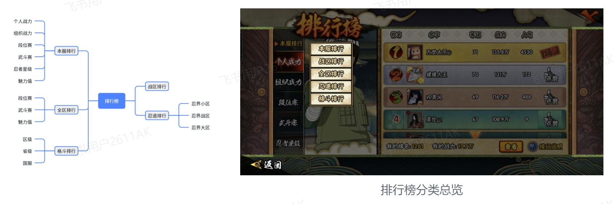

排行榜分类总览
4.2 系统分析
核心问题
在缺乏横向比较机制的单机体验中，玩家处于“成长盲盒”状态：不知道自己有多强、不知道谁是最强、不知道往哪里变强。具体表现为：
• 成长目标模糊：玩家只知道“要提升战力”，但不知道“要提升到什么程度才算强”
• 成就感无出口：个人成长只有自己知道，缺乏“被看见”的荣誉感
• 氪金动力不足：花钱提升后没有展示舞台，付费价值感知下降
• 社交话题缺失：玩家之间缺乏“谁更强”的自然话题，社交互动失去一个重要支点
不同于好友系统解决“私人关系”、组织系统解决“集体归属”、聊天系统解决“信息传递”，排行榜系统的核心任务是：构建游戏内的价值体系，让每个玩家都能找到自己的定位，老玩家获得荣誉，新手找到方向，利用攀比激发持续的动力。
基于这一核心问题，排行榜系统需要满足以下需求：
• 公正性：排名规则清晰透明，无可争议
• 全面性：覆盖战力、竞技、收集等多维度，让不同追求的用户都有榜可上
• 激励性：排名与奖励挂钩，刺激玩家持续投入
• 学习性：让普通玩家能看到强者的配置和成长路径
4.3 设计目的
1. 构建多维度评价体系，让每个玩家都有“上榜”的机会
2. 提供荣誉展示空间，将个人成长转化为群体认同
3. 引导玩家的成长方向，明确“变强”的路径
4.4 设计思路
1. 构建多维度评价体系，让每个玩家都有“上榜”的机会
• 设计特征：
战力、竞技、收集、特殊等多维角度，覆盖了战力党、竞技党、收集党玩家，是查看角色战力、组织战力等排名信息的主要渠道。
• 行为预期与价值：
玩家看到自己擅长的维度有排名产生竞争欲望，战力党持续付费提升数值，竞技党反复磨练技术，收集党努力收集忍者。各维度排名共同驱动DAU、付费转化和长线留存。
2. 提供荣誉展示空间，将个人成长转化为群体认同
• 设计特征：
￮ 本服排行：与同服务器玩家竞争，门槛最低，适合大众玩家；
￮ 战区排行：跨服务器分组竞争，扩大挑战圈；
￮ 全区排行：全服统一排名，仅顶尖玩家可上榜；
￮ 国服排行：全国玩家排名（格斗排行区级→省级→国服），最高荣誉。
• 行为预期与价值：本服排名激励基础竞争，全区排名激发荣誉野心；玩家不断挑战更高圈层，付费和活跃持续投入，延长了游玩周期，顶级玩家也能带动服务器的竞争氛围。
3. 引导玩家的成长方向，明确“变强”的路径
• 设计特征：
￮ 排行榜前列玩家可获得专属称号（如“忍界传说”“格斗天骄”）
￮ 部分排行榜（如段位赛）奖励头像框，可佩戴展示
￮ 排行榜界面可点赞，玩家可表达认可进行轻量社交
￮ 点击玩家可查看资料，让强者被围观
• 行为预期与价值：
称号/头像框作为荣誉资产代表强者身份的象征，激发他人羡慕与追赶，玩家为获得永久荣誉持续冲榜，上榜后主动炫耀。称号成为付费转化的催化剂，点赞增加社交互动。
4.5 小结
整体来看，《火影忍者手游》的排行榜系统构建了一个多维度、分层级、可展示的竞争坐标系：
• 多维度：战力、竞技、收集三大赛道并行，让每种玩家都有上榜机会
• 分层级：本服→战区→全区→国服，为不同实力玩家提供阶梯式目标
• 可展示：称号、头像框将排名转化为社交资本，强化荣誉感知
排行榜与好友系统、组织系统形成互补：好友系统解决“现实关系导入”，组织系统解决“集体归属感”，排行榜解决“个体荣誉”，三者共同驱动玩家持续投入。
5. 名片（交互）
好友系统-名片 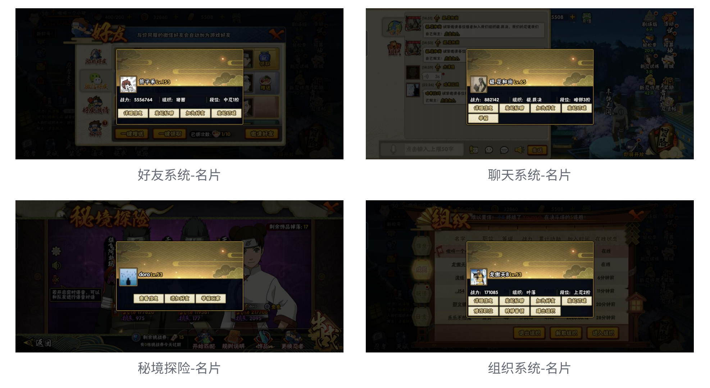 秘境探险-名片 |
聊天系统-名片
组织系统-名片 |


5.1 设计目的
提供便捷的社交操作入口，降低用户认知成本和开发维护成本
5.2 设计思路：
• 功能特征：
￮ 信息展示区：头像、名称、等级、战力、组织、段位（共6项核心信息）
￮ 可执行操作：查看详细信息、发起私聊、加为好友、发起切磋、举报（视情况）
• 行为预期与价值：
看到对方高战力/高段位/同组织或者其他社交契机，产生“想认识”“想请教”的社交动机，能够快速发起私聊/加好友，提升社交转化率；遇到骚扰快速举报，负面体验及时阻断；社交连接增强提升用户粘性，打造健康的社区环境保障长期留存。
二、局内社交点分析
分析
为什么局内需要社交：
在战斗中玩家处于高度专注状态，此时产生的社交互动具有即时性强、情感浓度高、转化效率高的特点。若局内缺乏社交设计，会导致：
• 对抗中的情绪出口：赢家无荣耀感，输家只有挫败感
• 协作没有默契：配合全靠感觉，体验割裂
• 负面体验需要反馈：遇到恶意玩家需要在不影响当前战斗的前提下保留追诉权利
• 精彩瞬间需要记录和传播：缺乏回放和展示的渠道
局内社交点的核心任务是：在不干扰核心战斗体验的前提下，进行轻量的社交，将每一次对战转化为情感连接的机会。
基于这一核心问题，局内社交点需要满足以下需求：
• 轻量化：社交操作不能打断战斗节奏，需与核心操作解耦
• 即时性：情感需在当下释放，不能延迟满足
• 选择性：玩家可自主选择是否参与社交，避免强制干扰
• 场景适配：不同类型玩法（对抗/协作）配置不同社交工具
• 防骚扰：避免恶意玩家利用局内社交破坏他人体验
1. 对抗类
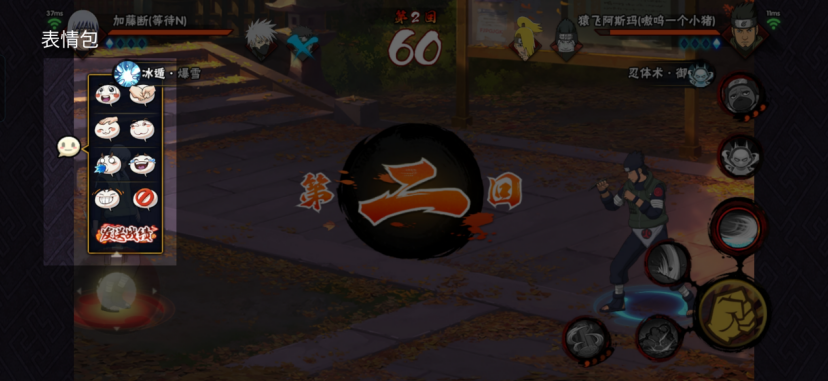
局内表情包
1.1 设计目的
提供轻量情绪表达出口，在不破坏对局体验的情况下缓解对局压力
1.2 设计思路
• 局内表情包：
￮ 设计特征：
对局节奏快时间短，表情包可以满足快捷、减负的需求
￮ 行为预期与价值：
打出精彩操作后发个表情，获得“被看见”的满足感；被秀后发个表情缓解尴尬等等，让玩家的情绪有出口，减少因憋屈产生的负体验。
2. 协作
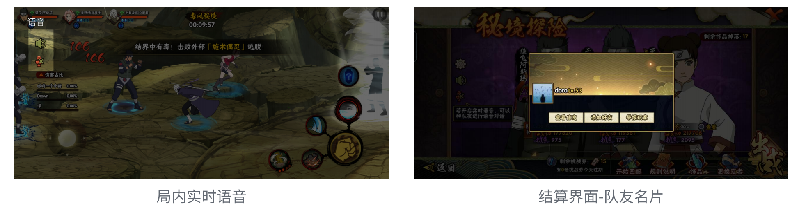
局内实时语音

结算界面-队友名片
2.1 设计目的
提供即时的沟通工具，降低配合成本提升通关成功率
2.2 设计思路
• 设计特征：
￮ 实时语音：秘境探险等玩法支持实时语音，方便战术沟通
￮ 查看名片：结束对局后可以点击查看队友的名片，进行查看信息、添加好友、举报玩家的操作
• 行为预期与价值：
信号系统让野队配合更顺利，语音系统让协作更高效；结束后查看名片进行操作既是为了保证玩家游玩体验也是提供了一个将临时关系转化为好友的机会。
3. 特殊
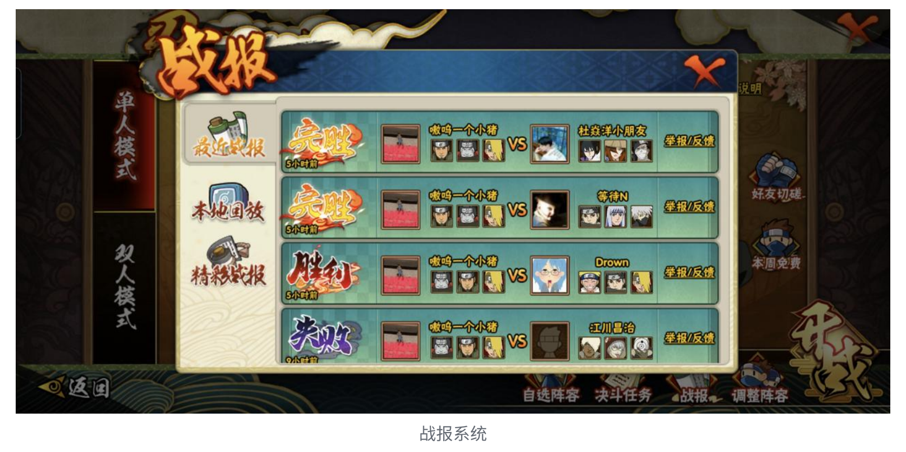
战报系统
3.1 设计目的
1. 搭建观战和回放系统，提供学习渠道激发竞争动力
2. 建立战斗追溯机制，满足复盘和维权需求维护竞技环境
3.2 设计思路
1. 搭建观战和回放系统，提供学习渠道激发竞争动力
• 设计特征：
￮ 观战系统：可观看在线好友的实时对战；精彩战报页面可观看他人对战录像，显示当前观看人数
￮ 本地回放：战斗结束后有临时的本地回放，可以下载随时观看复盘
• 行为预期与价值：
观战系统让新手有机会观摩高手操作，降低学习门槛，同时高手被围观获得成就感，形成正向激励；本地回放支持玩家自我复盘，提升技术；间接刺激付费和活跃。
2. 建立战斗追溯机制，满足复盘和维权需求维护竞技环境
• 设计特征：
￮ 最近战报：记录最近对战历史（对手信息、胜负结果、积分变化）；提供异常对局记录，方便玩家回溯问题；嵌入举报入口对异常行为进行举报
• 行为预期与价值：
战报让每一场战斗都有迹可循，玩家遇到恶意行为时能快速定位并举报，降低维权成本；举报反馈机制让玩家感受到环境被治理，增强对游戏公平性的信任；维护竞技环境保障了核心玩家的长期留存，也间接维护了付费意愿。
三、社区生态分析
分析重点：玩家关注什么
概述：社区生态是游戏社交体系的外延，承载着信息二次传播、深度内容生产和玩家沉淀的功能。社区生态的核心任务是：构建游戏核心内容外的信息与情感载体，将游戏内的简单游玩体验沉淀为持续的关注，通过内容消费和社群互动反哺游戏活跃度。
因此，社区生态需要满足以下需求：
• 信息同步：确保版本更新、活动资讯能够多渠道触达玩家
• 内容生产：持续产出攻略、教学、二创等UGC内容，降低新手门槛
• 文化沉淀：形成独特的玩家话语体系（梗、黑话），增强身份认同
• 互动参与：为玩家提供表达、交流、展示的舞台，提升归属感
• 福利反馈：通过奖励机制激励玩家持续关注和参与社区
社区生态由三部分构成：游戏内官方社区、游戏外官方社区（小程序/公众号）、第三方社群（贴吧、B站、QQ群等），三者各司其职，相互联动。
1. 官方社区
定义：由游戏运营团队主导建设的玩家互动平台
核心用户：活跃玩家、新手玩家
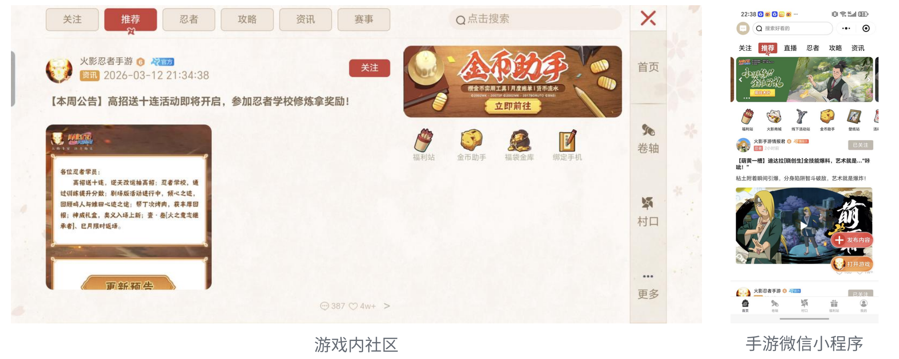
游戏内社区

手游微信小程序
1.1 游戏内
1.1.1 系统架构
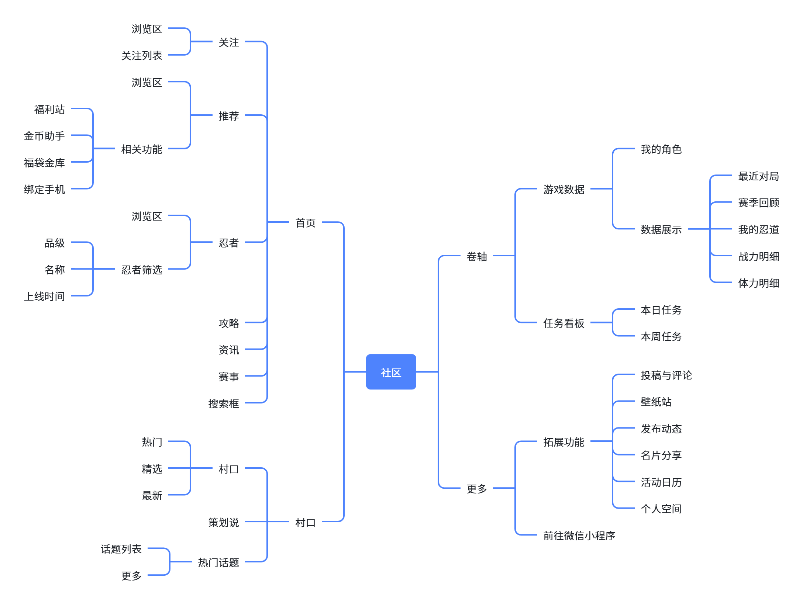
1.1.2 系统分析
嵌入在游戏内的玩家互动平台，通过主界面的社区入口进入。
为玩家提供一站式资讯获取、数据查询、福利领取和轻量社交的场所，同时承担新手引导和内容分发的功能。
面对的问题：
• 版本资讯分散在外部渠道，部分玩家错过信息
• 个人游戏数据无法直观（像社交媒体一样）回顾和分享，成就感缺乏更大的出口
• 玩家间交流局限于聊天频道
• 福利发放形式单一，缺乏持续吸引玩家登录的动力
1.1.3 设计目的
1. 构建一站式资讯聚合平台，降低玩家获取信息的成本，提升版本内容触达率
2. 提供个人数据可视化展示，满足玩家回顾成就、分享战绩的需求
3. 打造轻量论坛，促进玩家之间以及玩家和官方的交流
4. 整合福利体系，通过签到、任务等机制激励玩家每日登录和参与社区
1.1.4 设计思路
1. 聚合游戏内外的资讯，降低信息获取成本
• 设计特征：
￮ 首页内容聚合：整合关注、推荐、忍者、攻略、资讯、赛事六大板块，顶部设搜索框
￮ 村口补充：策划说、热门话题模块同步推送官方信息和玩家热议内容，进一步丰富资讯来源
• 行为预期与价值：
玩家打开社区即可获取最新版本资讯、热门攻略和赛事动态，无需在外部平台东翻西找，信息获取效率提升；分类浏览和搜索功能让新手快速找到所需内容，降低学习门槛；关注列表培养玩家每日查看习惯，形成黏性。推动版本内容触达率提升，同步提高玩家对活动的知晓度和参与度，间接促进付费与活跃。
2. 个人数据可视化，满足玩家的便捷分享需求
• 设计特征：
￮ 卷轴-游戏数据：
▪ 我的角色：展示头像、名称、等级、战力、段位等核心信息
▪ 数据展示：展示了最近对局、赛季回顾、我的忍道（自定义成就徽章）、战力明细、体力明细的详细数据统计
• 行为预期与价值：
玩家通过回顾个人数据看到自己的成长轨迹，产生成就感和自我认同，更愿意持续投入；数据可视化还间接引导玩家补足短板，提升整体活跃度。
3. 打造轻量论坛，促进玩家之间以及玩家和官方的交流
• 设计特征：
￮ 村口模块：
▪ 村口首页：热门、精选、最新三种排序，以话题聚合形式呈现讨论帖
▪ 策划说：官方人员发布的内容，玩家可点赞、评论，形成直接沟通渠道
▪ 热门话题：展示当前玩家热议的标签，点击进入话题列表参与讨论
• 行为预期与价值：
降低玩家参与讨论的门槛，无需复杂操作即可融入社区；策划说拉近官方与玩家距离，增强信任感同时收集反馈优化产品；热门话题引导讨论方向，让新用户快速找到共同话题。通过这些功能，玩家在游戏内也能进行相关的讨论，推动游玩体验的优化，提高每日在线时长。
4. 整合福利体系，通过签到、任务等机制激励玩家每日登录和参与社区
• 设计特征：
￮ 首页：包含福利站、金币助手、福袋金库、绑定手机等快捷入口，提供游戏内容外的核心资源获取渠道
￮ 卷轴-任务看板：
▪ 本日任务：汇总每日可完成的游戏内任务和奖励预览。
▪ 本周任务：周常任务进度展示，如“本周参与组织争霸X次”。
• 行为预期与价值：
￮ 将分散的福利集中呈现，玩家每日登录社区即可一键领取，直接拉升DAU；
￮ 为新手提供充分的引导，快速了解核心资源的获取渠道、拿到额外的资源、绑定手机提升账号安全，减少流失；
￮ 任务看板整合日常任务，玩家无需切换界面即可规划每日/每周目标，任务完成率提升，游戏内活跃同步增长；
￮ 福利体系与社区深度绑定，使社区成为玩家每日必到之地，进而增加其他模块的曝光机会。
1.2 游戏外
由官方运营、独立于游戏客户端的轻量平台，主要包括微信小程序、官方公众号、官方微博、抖音官方号等
游戏内社区受限于客户端体积和性能，无法承载过于复杂的功能；因此玩家在游戏外也需要一个轻量入口查看资讯、领取福利、参与活动
1.2.1 设计目的和思路
1. 提供便捷的信息入口，方便玩家在碎片时间获取游戏资讯
2. 拓展福利发放渠道，通过小程序签到、任务等吸引玩家回流
3. 沉淀核心用户，通过公众号深度内容、社群运营维系核心玩家
行为预期与价值：小程序作为游戏外触点，玩家在非游戏时段也能保持与游戏的连接，签到福利刺激每日打开，积分兑换引导回流。小程序与游戏内社区共用同一账号体系，数据互通，形成内外闭环。
2. 第三方社群
定义：玩家自发聚集、在其他社交软件或平台上形成的社群
核心用户：深度玩家、内容消费者、吃瓜群众
核心问题
官方社区无法满足玩家的所有需求，尤其是游戏本身建立在大动漫IP之上，需要第三社群对深度内容创作、即时组队、情感共鸣等方面进行补充。
主要内容
1. 高质量攻略和二创
2. 游戏文化和梗传播
3. 情绪输出和舆情反馈
4. 新手求助
3. 小结
三位一体的结构：
• 游戏内官方社区：一站式资讯+个人数据+轻量论坛+福利整合，提升玩家信息获取效率和日常活跃，通过提高视觉的可读性、保证参与两条思路，将部分社区嵌入游戏核心循环。
• 游戏外官方社区（小程序等）：轻量入口+福利延伸+数据互通，在游戏外维系玩家连接，实现内外双向导流，增强用户群体的粘性。
• 第三方社群：深度内容+文化沉淀+即时社交+舆情反馈，是游戏生态的活力源泉。
四、结论
社交系统的五层结构
1. 战略层
1. 核心定位：以熟人社交为主的轻社交强竞技格斗游戏，社交设计服务于核心玩法，不增加玩家负担。
2. 商业目标：通过社交设计提升用户留存、活跃度与付费转化，延长游戏生命周期。
3. 用户需求：
a. 利用腾讯微信/QQ关系链优势，将现实社交关系导入游戏，降低社交成本
b. 解决单人玩法后期动力不足的问题，满足玩家情感归属、社会比较、互助成长的需求
4. 设计目标：
• 局外：构建集体关系网络，绑定利益与荣誉
• 局内：提供轻量情绪表达与战术协同，不干扰战斗
• 社区：打造信息与内容生态，反哺游戏活跃
2. 范围层
局外社交系统：通过组织、好友、排行榜、聊天等功能，覆盖从集体归属到个体沟通的全场景，让玩家在集体中找到定位，快速建立和维护游戏内社交关系。
局内社交点：通过表情包、快捷信号、战后加好友、战报复盘等轻量功能，覆盖对局前中后的情绪表达与协作需求，缓解竞技压力，同时维护游戏环境。
社区生态：通过游戏内社区、官方小程序和第三方社群（贴吧、B站等）共同覆盖游戏外信息获取、内容消费、文化沉淀的全环节，形成从游戏外到游戏内的完整生态闭环。
3. 结构层
现实关系（微信/QQ）→ 好友系统导入 → 组织系统沉淀
↑ ↓
社区内容反哺 ← 精彩战报分享 ← 局内对战沉淀 ← 组织活动参与
↓ ↑
第三方社群发酵 → 舆论反馈 → 官方优化 → 版本更新
4. 交互层
局外：轻量化、批量操作。键赠送体力、批量管理好友、点击名片直达操作。组织管理提供透明化数据和权限控制。
局内：不干扰战斗系统。战中预设表情包、快捷信号；战后差异化设计（PVP仅点赞，PVE可加好友）；战报嵌入举报入口。
社区：降低参与门槛。首页资讯流、关注订阅、话题聚合、福利一键领取、个人数据可视化。
5. 表现层
IP塑造：深度融合IP内容，将火影的元素融入交互界面，设置了以角色为原型的伊鲁卡助手等等。